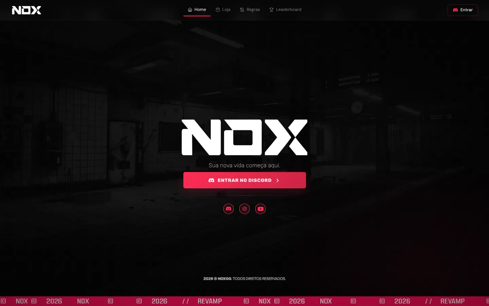
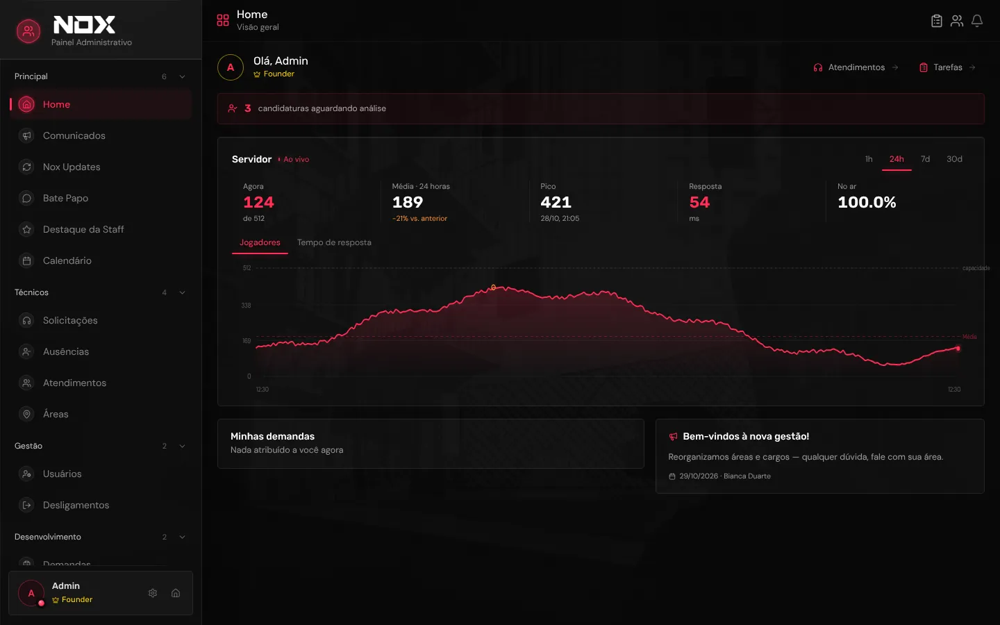
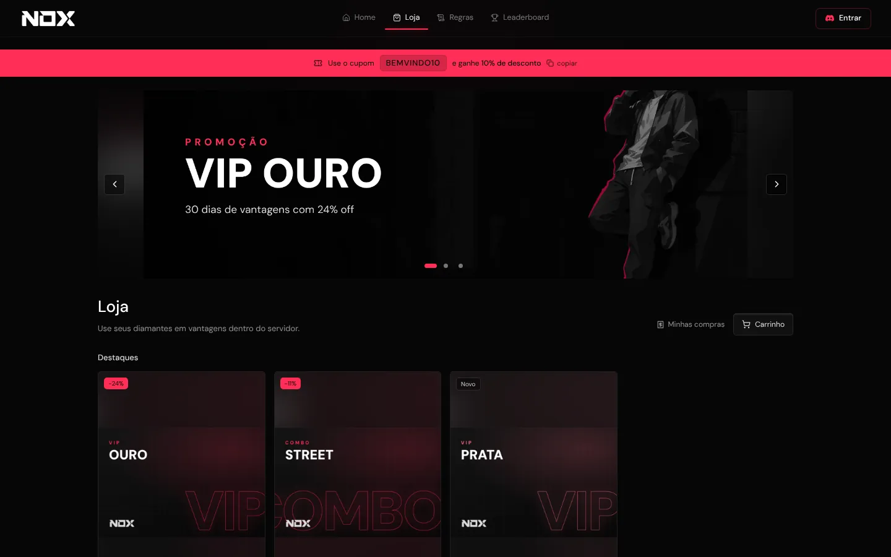
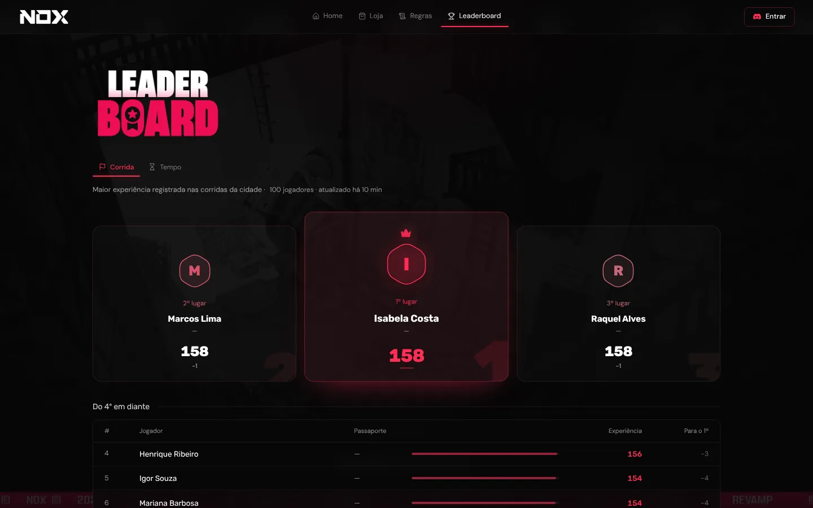
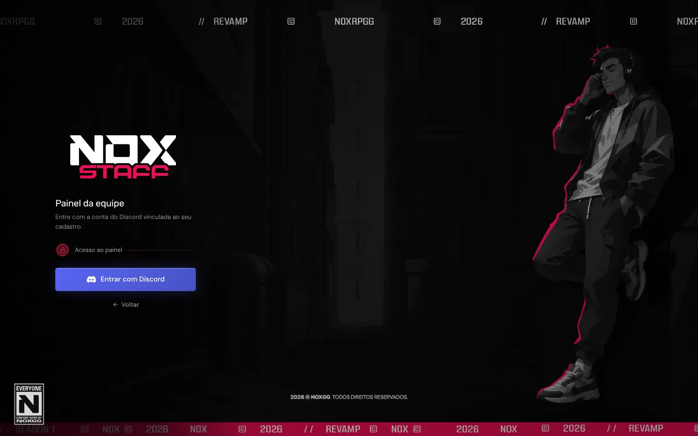

NoxGG
Painel de gestão e loja para um servidor de roleplay em FiveM.
- Suporte, demandas, recrutamento com entrevistas, contratos e relatórios da equipe num só lugar.
- Loja com carrinho, cupons e PIX, livro-caixa, estorno e proteção contra cobrança duplicada.
- Login com 2FA, permissões por cargo, notificações em tempo real e integração com o jogo e o Discord.